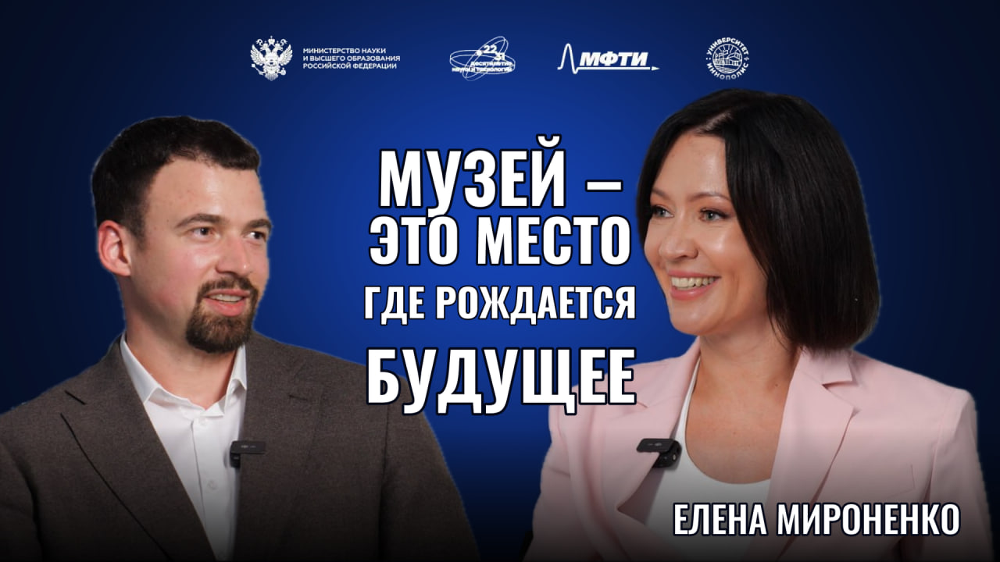

Елена Мироненко
Генеральный директор музея «АТОМ»

01О герое
Елена Мироненко — российский управленец в сфере культуры и музейного дела, генеральный директор музея «АТОМ» на ВДНХ. Ранее руководила культурными учреждениями и занимала должность министра культуры Красноярского края. В работе соединяет музейные проекты, сохранение культурного наследия и просветительские программы для широкой аудитории.
02Ключевые тезисы
- У создателей «АТОМа» была задача открыть для обычного посетителя прежде закрытую отрасль. Мироненко хотела, чтобы у людей появился повод прийти в музей ещё раз.
- На ночной экскурсии историю советского атомного проекта рассказывают вместе актёры и экскурсоводы. Посетитель проходит этапы проекта вместе с ними.
- Разговор с ребёнком о будущей профессии можно начать с прогулки по ВДНХ. После первого посещения дети возвращаются в музей с одноклассниками или записываются на мастер-класс.
- Для одного и того же музея нужны разные маршруты. В «АТОМе» уже есть короткие и обзорные экскурсии, а также программы для слабослышащих и маломобильных гостей.
- Мироненко видит одно из применений ИИ в музее в персональном гиде. Такой гид мог бы подбирать маршрут под интересы гостя и время, которым он располагает.
- Руководителю приходится регулировать собственный темп. Мироненко рассказывает, как учится делать паузу, чтобы коллеги успели обдумать новую идею и подсказать, что она упустила.
03Возьми с собой
Что применить
Перед походом в музей спроси у ребёнка, что ему самому хочется увидеть. Начните прогулку с его вопроса.
Скажи экскурсоводу, сколько у тебя времени и какая тема тебя интересует. Так проще выбрать маршрут.
Прежде чем давать команде следующее задание, спроси, какие трудности коллеги уже заметили в твоей идее.
Цитаты
Музей — это лейбл, у которого знак качества изначально интегрирован в название.
— Елена Мироненко
Я стараюсь не убить команду своими идеями и скоростью.
— Елена Мироненко